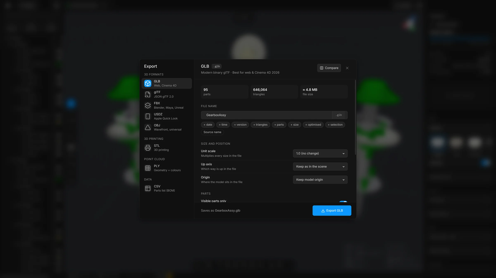

Export
Write the model to GLB, glTF, FBX, USDZ, OBJ, STL, PLY or a parts list, name the file, and set the scale, up axis and origin the next program needs.
Steps
- Click Export at the right of the top bar, or press CtrlE. A list of formats drops down. The button is dimmed while no model is open.
- Choose a format. The Export window opens with that format selected. You can still change it in the list on the left.
- Check the file name. Set the options. For a first try, the defaults are fine.
- Press the button at the bottom right, for example Export GLB.
- The file arrives as a download in your browser, normally in your downloads folder. A message confirms it.


The window
The list of formats is at the left, in groups: 3D formats, 3D printing, point cloud and data. The rest of the window is for the format you chose. From the top:
- Format and Compare
- The name of the format and a line about it. Compare opens a sheet that shows what each format keeps.
- What will be written
- Three figures that follow your options: how many parts, how many triangles and about how big the file will be. For a parts list: rows, columns and size.
- File name
- The name the file gets, with the ending for the format. The buttons under it build the name (see below).
- Visible parts only, Selected parts only
- Which parts go in the file.
- Advanced
- Shut until you open it, and it stays as you left it. Under it: size and position (unit scale, up axis, origin and pivot points), how the parts are arranged (merge, flatten), the options that fit the format, and a check of the size against a target.
- Bottom line
- Says what the file will be called, for example “Saves as rd-fine.glb”. For OBJ it adds that a
.mtlfile with the colours comes with it. If no part matches your options, it says so and the export button is dimmed.
The choices you make for scale, axis, origin and the parts switches are kept for the next export. The file name and Selected parts only are not.
The formats
- GLB
- Modern binary glTF, in one file. The app calls it best for the web and Cinema 4D.
- glTF
- The same as GLB, written as text (JSON glTF 2.0).
- FBX
- Binary FBX 7.4. The app lists Blender, Maya, 3ds Max, Houdini and Unreal.
- USDZ
- For Apple Quick Look and Reality Composer.
- OBJ
- Wavefront OBJ. Universal, geometry only. The colours go in a
.mtlfile beside it. - STL
- Binary STL. The standard for 3D printing.
- PLY
- Geometry with vertex colours.
- CSV
- A parts list as a spreadsheet: name, colour, triangles, vertices, volume, size, and whether the part is flagged, visible or locked. No geometry is written.
Which format should I choose helps you pick.
Name the file
Type a name, or let the buttons under it build one. They are the same as in Save a scene. Each button adds one piece to the name, and a second press takes it off. The counts and the size are those of what is about to be written, and they change when you change an option.
- + date, + time
- Today’s date, or the time now.
- + version
- A version number. Press it again to raise it. Hold Shift to take it off.
- + triangles, + parts, + size
- The triangle count, the number of parts and the approximate file size.
- + saving
- How much lighter than the file you opened. It shows only when the export is lighter.
- + optimised, + selection
- The words
optimisedandselection. - Source name
- Starts again from the name of the file you opened.
The ending is added for you, so leave it out. Characters a file name cannot have are replaced with _. When the name is empty, the scene’s own name is used.
Size and position
These four are under Advanced.
- Unit scale
- Multiplies every size in the file. 1.0 (no change) keeps the model as it is. CAD models are usually in millimetres. If the next program works in metres, choose × 0.001 (mm → m). The list also has cm to m, m to mm, m to cm, inches to mm, mm to inches, and Custom….
- Custom scale
- The multiplier, when Unit scale is on Custom….
- Up axis
- Keep as in the scene writes the model the way it stands. Turn Z-up into Y-up turns the model so Y is up, which is what glTF, OBJ and Maya expect. A model that already stands Y up, such as one that came from Cinema 4D or from a glTF, must be kept as it is. Turning it lays it on its side.
- Origin
- Keep model origin leaves the model where it is. Recentre to bbox centre puts the middle of the model at 0,0,0. Centre XY, drop to floor (Z=0) centres it and stands it on the floor.
- Pivot points
- At the centre of each part (the default) writes every part around its own centre, with its position on the object, so that in Cinema 4D, Blender and Maya the axis of each part is at the part. A part from a STEP file has its origin at 0,0,0 with its shape out where it sits in the model, so without this every axis would be at 0,0,0. As in the scene keeps what the part has. It is shown for GLB, glTF, FBX and USDZ. An FBX object also carries the rotation and the scale of its part.
The up axis and the scale you set in Settings, Scene only change how the scene is shown on screen. They do not go into the file. The two choices in this window decide what the file says.
Parts
- Visible parts only
- Leaves hidden parts out of the file. On by default.
- Selected parts only
- Writes only the parts that are selected, shown or not. It overrides the switch above.
- Merge into one mesh
- Writes the whole model as one object. Useful for 3D printing. The group tree is lost.
- Flatten groups
- Writes every part at the top level, without the group folders. Handy for programs that stumble on groups inside groups. It is shown for the formats that have a tree (GLB, glTF, FBX, USDZ, OBJ), and it is dimmed when you merge into one mesh.
Format options
- Draco compression
- GLB only. Compresses the mesh data, which typically makes the file 5 to 20 times smaller. Exporting and loading are slower.
- Meshopt compression
- GLB only. Compresses the vertex data with Meshopt and rounds positions, normals and UVs to a fixed number of bits. It is quick to decode and streams well, and the file is about a quarter of the plain size. Draco is smaller still (about a fifth, measured on a CAD assembly), and the gap narrows once the server compresses the file too. The viewer must read it: three.js, Babylon.js and model-viewer do, some others do not, and Draco is the safer choice for those. The file is saved as
name.meshopt.glb. - Faster to draw
- GLB only. Puts the triangles and the vertices in the order the graphics card likes, so the model draws faster. The shape and every attribute stay exactly as they are, and any viewer opens the file. Meshopt compression does this too. If you tick Draco as well, Draco is used.
- ASCII FBX
- FBX only. Writes the FBX as text instead of binary. Try it if the next program cannot read the binary file.
- ASCII STL
- STL only. Writes the STL as readable text. It is much larger. Use it only for a program that cannot read binary STL.
For a parts list, the options about scale, axis, origin and merging are left out, because no geometry is written.
Good to know
- The export contains the model as it is now: deleted parts are gone and reduced meshes are reduced.
- It runs in solid view and switches back afterwards, so a view mode never ends up in the file.
- After an export, the Optimisation report shows the size of the exported file beside the size of the file you opened.
- If the file you opened was compressed (Draco, Meshopt or quantised), the window says so, because an export without compression is two to twenty times larger.
- Draco compression needs an internet connection the first time, because the app fetches its compression code on demand. Meshopt compression and Faster to draw do too: the first time, the app fetches glTF Transform. If that fails, it saves a plain GLB and says so.
- A very large model can be too big for a text format such as OBJ. The app then suggests GLB or STL, which are binary and much smaller.
- An FBX says which unit it uses and which way is up, so the next program can read the size and the direction correctly. It also shares one material between all the parts of the same colour, which makes the file quicker to open.
- OBJ keeps parts that share a name apart, by giving them a number:
name,name.001and so on.